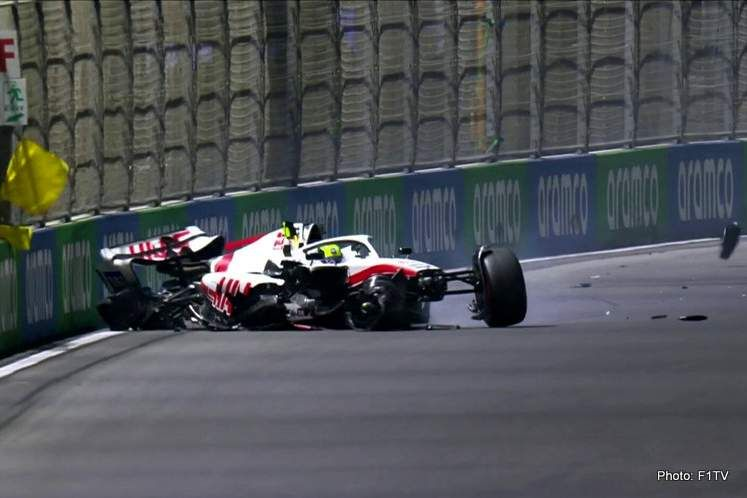
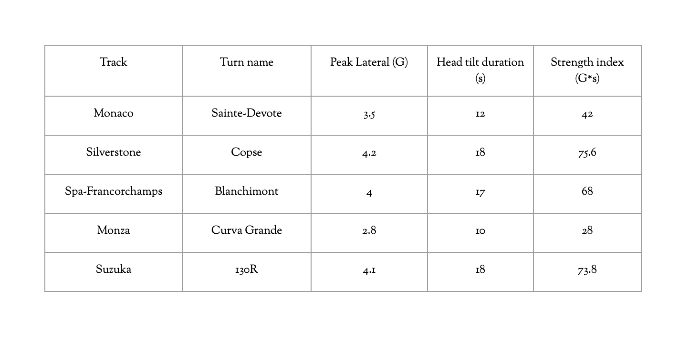
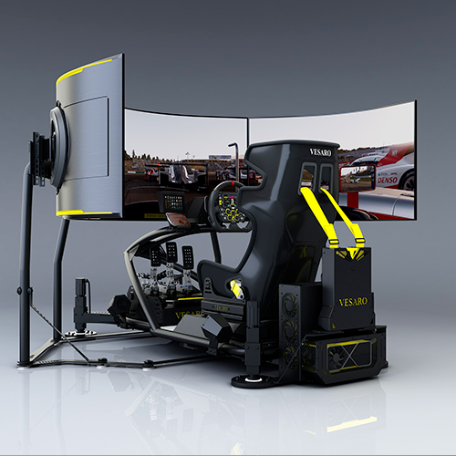

The psychology of focus, pressure, and performance in Formula 1.
By: Anirud Senthil
The engine of my Formula 1 car screams as it rockets down the back straight of the Jeddah Corniche Circuit. On the track, concrete walls blur past at over 200 miles per hour. My hands gripping the steering wheel, knuckles white, sweat starting to drip down. I’m on the final lap, about to set one of my fastest lap times ever.
I hit the brakes, the force of the deceleration throws my body forward. The apex of the corner arrives, and in a split second decision to squeeze out every ounce of speed, I slammed the accelerator just a fraction too early. The rear tires lose their grip. The car spins.
Fragments of the front wing scatter across the asphalt as my car thuds into the wall. My run was over. My focus was shattered. It’s a feeling all racers know too well: throwing it all away at the end.
For anyone analyzing the evolution of high performance motorsport, this heartbreaking scenario highlights a fundamental truth; racing is about your split second reflexes and serves as a brutal exam to see how long you can stay focused. Over the decades, the sport has shifted from a battle of who had the fastest car to an intense mental war entirely inside the driver’s mind.

In the early eras of racing, the discipline was insanely punishing. If a competitor lost focus for even a split second after two hours of grueling racing, the result was an instant, unforgivable crash.
The sports GOATs (greatest of all time) have always understood that aggression can turn into a vulnerability. The legendary four-time world champion, Alain Prost, was famous for a fluid driving style that was much different from his competitors. As Prost famously said,
Eventually, racing teams realized that to survive on the real track, they had to train the human brain to manage extreme stress, making them mentally athletic and ready to undergo any sense of pressure.
Today, this cognitive training has evolved into a highly advanced global science centered around the phenomenon known as flow. First researched by psychologist Mihaly Csikszentmihalyi, flow theory describes an optimal state of an experience where an individual becomes so immersed in the demanding task that self-consciousness disappears, and performance peaks (Csikszentmihalyi). To achieve flow, an activity must present clear goals, immediate feedback, and a perfect balance between the challenge and the individual's skill level (Csikszentmihalyi).
Modern neuroscientific research on video games reveals that when a competitor enters this “zone”, profound changes occur within the brain's pathways. Neuroimaging and electroencephalogram (EEG) studies show a significant decrease in “self referential processing” meaning the regions of the brain for self doubt and panic quiet down entirely (Brain-Heart Interaction). Simultaneously, a surge in the dopamine reward system stops body fatigue, creating hyper-focused actions (Brain-Heart Interaction).

Strain Index — Silverstone
Strain Index — Suzuka
Processing Threshold Reached
Look at one of the best in the sport, Jarno Opmeer, who is known for his slightly unsettling calmness under pressure that I completely lacked during my chaotic final lap in Jeddah. Opmeer can navigate difficult tracks at 200 mph while staying completely unfazed, which is a skill many drivers strive for, separating the elite from an amateur. “The car rewards precision and punishes aggression” (Red Bull Racing).
However, maintaining this state of flow is an exhausting mental battle. When stress outweighs a driver’s processing capacity, this causes mental fatigue, leading to a direct correlation in delayed reaction times. In high performance racing, this cognitive outburst is also stimulated by physical strain.
According to neurophysiological research conducted by Pranav Rengaraj and Anirud Senthil, a driver's cognitive workload can be quantified through a metric known as the strain index, which calculates Peak Lateral-G-Forces multiplied by Head Tilt Duration. When navigating high stress circuits, the turns taken at insane speeds, such as Silverstone (Copse) at a strain index of 75.6 and Suzuka (130R) at 73.8, demand maximum physical and mental exertion from the driver (Rengaraj and Senthil 8).
The data proves that this compounding load triggers a state of “cognitive blindness,” where the brain’s processing threshold is completely overwhelmed (Rengaraj and Senthil 7). As mental fatigue increases under these extreme conditions, the brain struggles to process rapidly changing environmental cues, which lead to reaction delays (Rengaraj and Senthil 4). In a split second, the fatigued brain miscalculates the braking zone, and sends the car into the barrier.
My devastating crash in Jeddah didn’t happen because of a lack of skill per se. It happened because my brain panicked under the immense pressure of getting to the finish line. To truly go fast, you have to figure out a way to slow down your mind.
I didn’t risk my life on the hot asphalt of Saudi Arabia, nor do I have multi-million dollar sponsors. My cockpit is a specialized racing simulator in the living room I’ve used daily for the past year whenever I get some time.

But, don’t disregard everything I just said. The sweat, the white knuckles, the pressure are all real. The virtual cockpit is essentially my gateway to reality. The next time you face a high stress situation, such as a tough exam or a presentation, try treating it like the final turn. Don’t panic or rush to fix the issue at the very end. If there’s anything I’ve learnt, it’s to take a deep breath and make smooth choices to prevent your life from crashing. In the end, the race isn’t always won by who's the fastest, but whoever stays smooth throughout. And in our context, the race is our life and consistency is key.